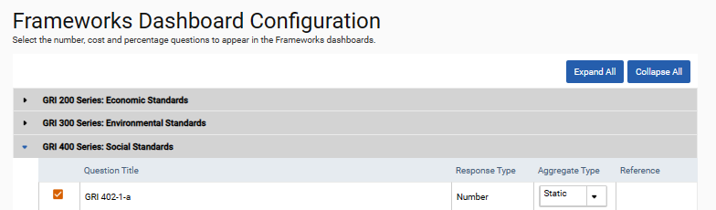

To set up the Frameworks Dashboards, click ‘Frameworks > Settings > Dashboard Configuration’.
From here you can select the number, cost, computational, and percentage questions to appear in the Frameworks Numeric and Comparisons Dashboard, and the Single Selection, Multi Selection or Yes/No questions to appear in the Multi-choice dashboard. Questions can be made available in the dashboard by checking the box next to each required question.

Questions set to a static aggregation type are averaged. Questions set to Rate are summed.